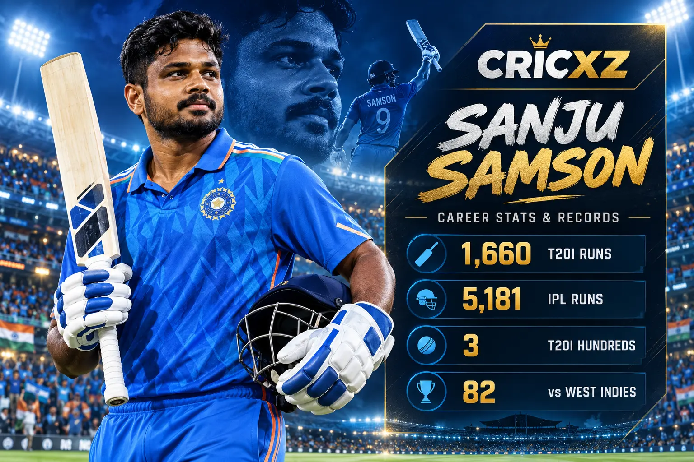
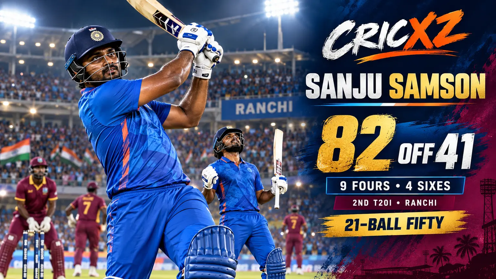

ODI Career
- Matches
- 16
- Innings
- 14
- Runs
- 510
- Batting average
- 56.67
- Strike rate
- 99.61
- Highest score
- 108
- Hundreds / Fifties
- 1 / 3

Sanju Samson is a three-time T20I centurion, an ODI hundred-maker and one of the IPL's leading Indian wicketkeeper-batters. His 2026 season included a Player-of-the-Tournament campaign in India's T20 World Cup triumph and an explosive 82 against West Indies in Ranchi.
Career statistics are current through the second India–West Indies T20I on 9 October 2026.
Samson remains an active player, so these figures may change after his next appearance. The T20I snapshot includes his scores of 11 and 82 in the first two matches of the current series.
Samson's stroke range, fast hands and wicketkeeping ability have made him a flexible top-order option for India. His international opportunities were intermittent early in his career, but three T20I hundreds and a breakthrough 2026 World Cup established his ability to produce match-defining innings.

Samson struck 82 from 41 balls against West Indies in Ranchi on 9 October 2026. He reached fifty in 21 deliveries and finished with nine fours and four sixes, setting the tempo for India's 249/5.
His partnership with Ishan Kishan produced 97 runs from 43 balls. Although West Indies chased the target to level the series, Samson's innings ended a run of low scores and underlined his power at the top of the order.
Samson scored 321 runs in five innings during India's successful 2026 Men's T20 World Cup campaign. He averaged 80.25, struck at 199.37 and was named Player of the Tournament as India retained the title.
His knockout performances included 89 against England in the semi-final and another 89 against New Zealand in the final. The tournament transformed a difficult start to 2026 into the most important international achievement of his career.
Debut: 23 July 2021
Made his ODI debut against Sri Lanka in Colombo and later scored 108 against South Africa at Paarl.
Debut: 19 July 2015
Made his India debut against Zimbabwe at Harare and reached 74 appearances during the Ranchi T20I in October 2026.
Debut: 14 April 2013
Emerging Player in his first season, long-time Rajasthan Royals captain and a Chennai Super Kings batter in 2026.
One of India's most prolific century-makers in men's T20 internationals.
Produced his career-best international T20 score against Bangladesh in 2024.
Registered his maiden ODI century against South Africa at Paarl.
Shared an unbeaten 210-run second-wicket stand with Tilak Varma against South Africa in 2024.
Matched the joint-fastest T20I fifty by an Indian batter against West Indies.
Passed 5,000 career runs in the Indian Premier League.
Played a defining role as India successfully defended the men's world title.
Scored 321 runs at a strike rate of 199.37 during the 2026 World Cup.
Won the league's emerging-player award during his breakthrough season.
Led Rajasthan Royals and became one of the franchise's leading run-scorers.
Career statistics and recent-match details were checked on 10 October 2026.
Read the second-T20I match report from Ranchi, revisit India's eight-wicket victory in the series opener, or browse all CricXZ player profiles.